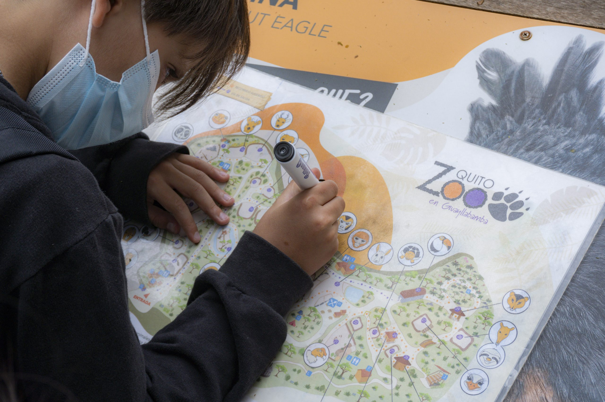

Experiencias
El Zoológico es mucho más de lo que ves, es un mundo por descubrir.
Vivirlo y sentirlo en cada visita te llevará por emociones y aprendizajes que te comprometerán con el cuidado del mundo animal. Las experiencias nocturnas, aventuras y campamentos te invitan a conocer de manera distinta la vida silvestre.

Recorridos nocturnos
Reúnete en familia o con amigos, en grupos de máximo 5 personas, y ven al Zoo a disfrutar de un recorrido divertido.
Más información
Cumpleaños en el Zoo
Festeja en medio de la naturaleza, disfruta junto a tus amigos y amigas de un cumpleaños en el Zoológico. .
Más informaciónEducación
Diviértete y aprende en el Zoo
El departamento de Educación para Conservación del QuitoZoo ha creado varios programas educativos dirigidos a niños, niñas y jóvenes de instituciones educativas.

Visitar un zoo puede ser una experiencia divertida y educativa para toda la familia. En el zoo, los
visitantes pueden ver animales de todo el mundo, aprender sobre su hábitat natural y cómo podemos ayudar
a protegerlos.
Una de las mejores cosas de visitar un zoo es tener la oportunidad de ver animales que de otra manera
solo verías en libros o en la televisión. Puedes ver elefantes, tigres, leones, osos, monos y una
variedad de aves exóticas, entre muchos otros animales. Además, muchos zoológicos tienen áreas
especiales para animales locales, como reptiles y anfibios, lo que te permite aprender más sobre la
fauna de tu propia región.
Otra ventaja de visitar un zoo es la oportunidad de aprender sobre cómo podemos ayudar a proteger los
animales y su hábitat natural. Muchos zoológicos tienen programas de conservación y educación que te
enseñan sobre cómo los humanos afectan a los ecosistemas y cómo podemos tomar medidas para reducir
nuestra huella ecológica.
Además de ver animales y aprender sobre la conservación, los zoológicos también ofrecen una variedad de
actividades para toda la familia. Puedes tomar un paseo en un tren del zoo, ver un espectáculo de
delfines o de rapaces, o incluso alimentar a algunos animales.
En resumen, visitar un zoo es una forma divertida y educativa de pasar el tiempo con tu familia. Te
permite ver animales de todo el mundo, aprender sobre su hábitat natural y cómo podemos ayudar a
protegerlos, y disfrutar de una variedad de actividades emocionantes. Si buscas una actividad divertida
y educativa para hacer con tu familia, una visita al zoo es una excelente opción.
Mundo Animal
El Zoo-Bo, aparte de ser un refugio de animales silvestres, también es un centro de rescate de individuos de diversas especies no domésticas, que llegan por diferentes circunstancias hasta nuestra clínica. Las causas principales que provocan esta situación son el tráfico ilegal, la mascotización, la caza, ataques de mascotas y otras amenazas que enfrentan frecuentemente animales como aves, monos y tortugas, las especies que arriban en mayor número, aunque todos los años hay casos de una amplia variedad de animales. Existen casos en los que personas particulares encuentran a tortugas en medio de vías, halcones que son hallados heridos con perdigones, monos que vivieron mascotizados y presentan problemas de salud, corales que son incautadas en viajes clandestinos, tortugas marinas que son extraídas de su hábitat, entre otros hechos puntuales y diversos, que revelan la triste realidad que deben soportar especies silvestres en Ecuador. Para enfrentar cada caso, el equipo veterinario del Zoo-Bo recibe a los animales para hacer una evaluación inmediata del estado de salud que presenta el individuo, para decidir si es necesario un procedimiento urgente que lo estabilice o evite que sufra, o si solo es necesario un tiempo de reposo del animal cuando no presenta mayores alteraciones físicas o de comportamiento. El objetivo primordial con cada especie recibida es trabajar por su recuperación, rehabilitación y liberación, siempre y cuando todas las condiciones médicas se cumplan para poder lograr ese propósito. En varios casos, lastimosamente, no es posible devolver a algunos animales a su hábitat, lo que implica que se mantienen bajo vigilancia veterinaria y supervisión de zoocuidadores y zoocuidadoras, quienes se encargan de alimentarlos, proporcionarles medicinas indicadas por las veterinarias y veterinario de Zoo-Bo, suministrarles suplementos que requieren, aplicar enriquecimientos ambientales, entre otras acciones claves para asegurar el mayor bienestar posible del individuo que debe mantenerse bajo cuidado humano.